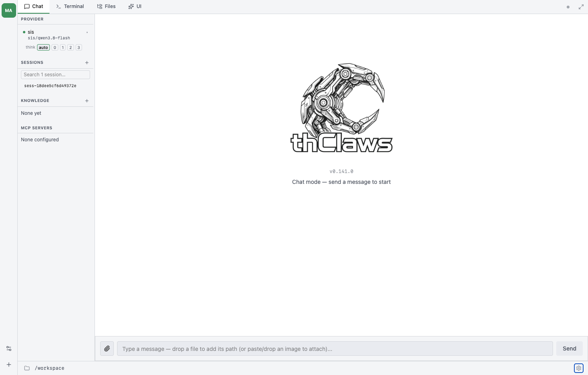
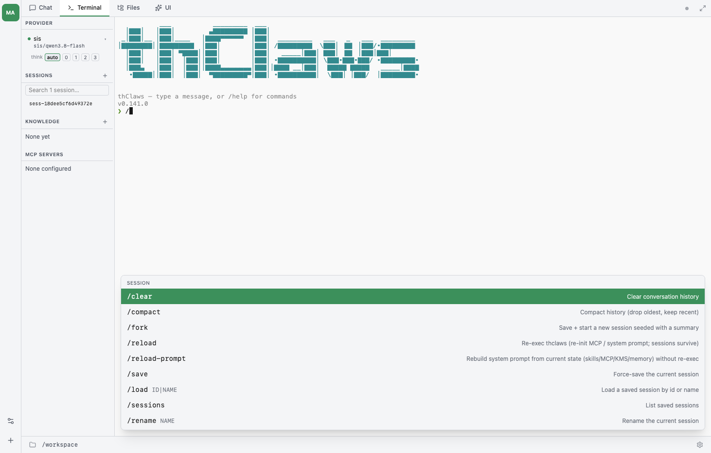
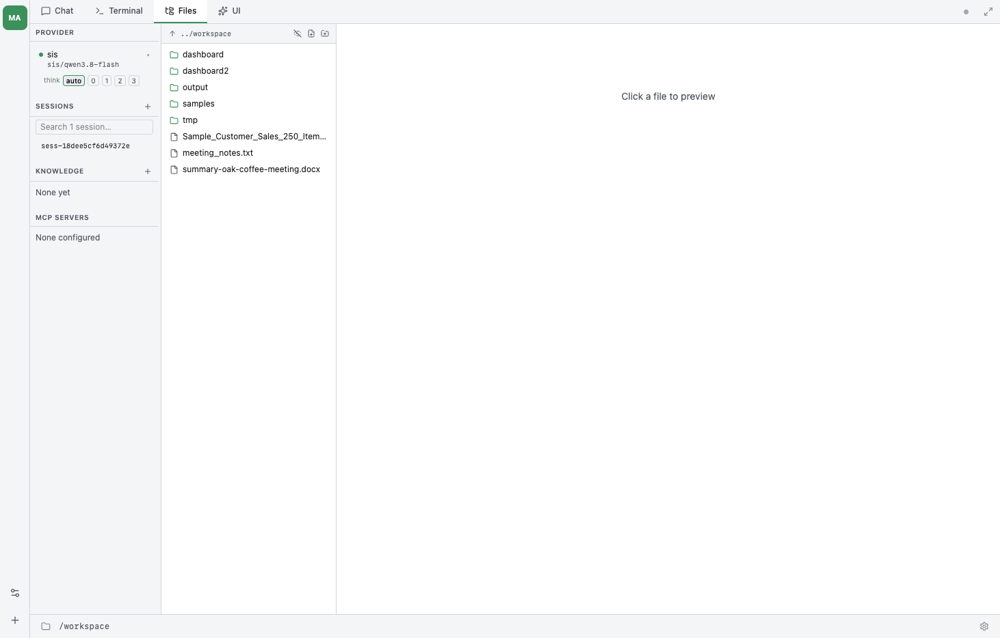
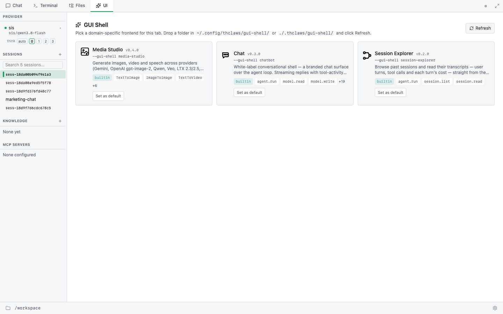
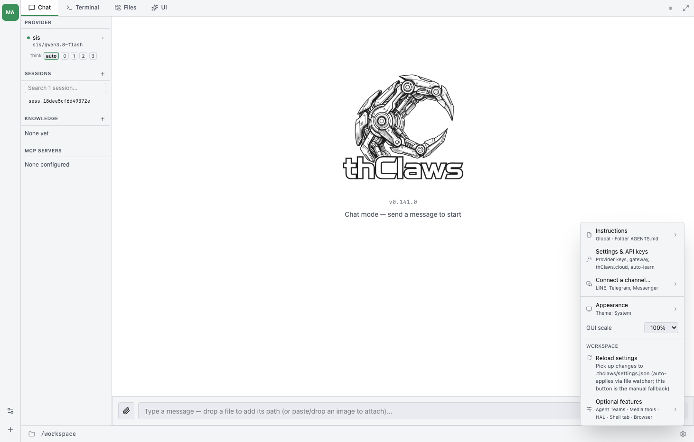
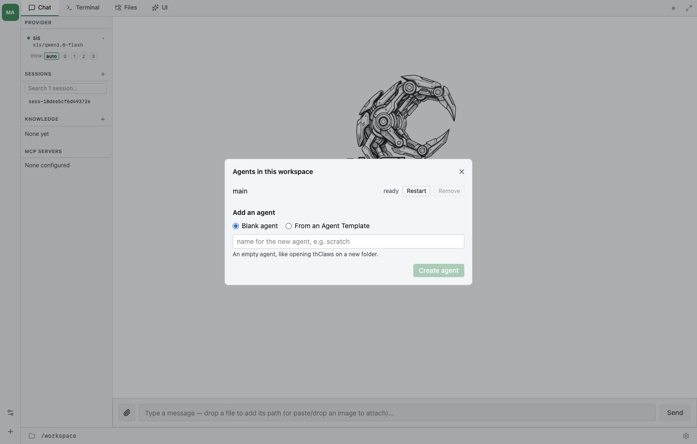
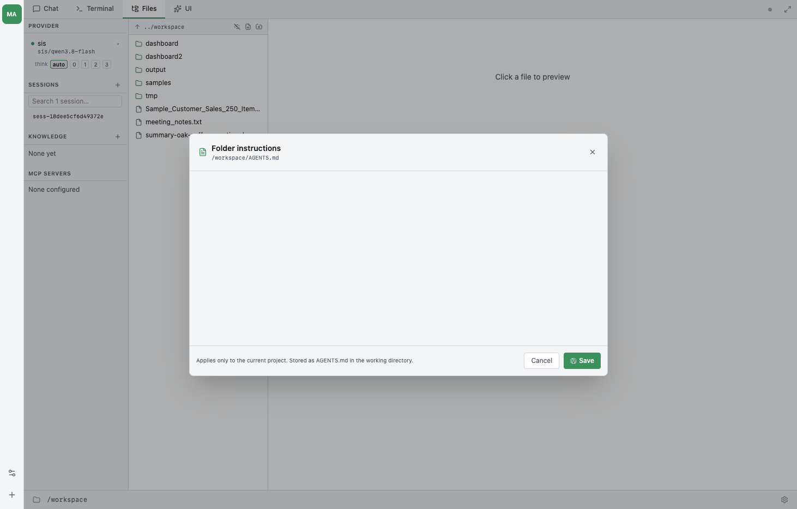
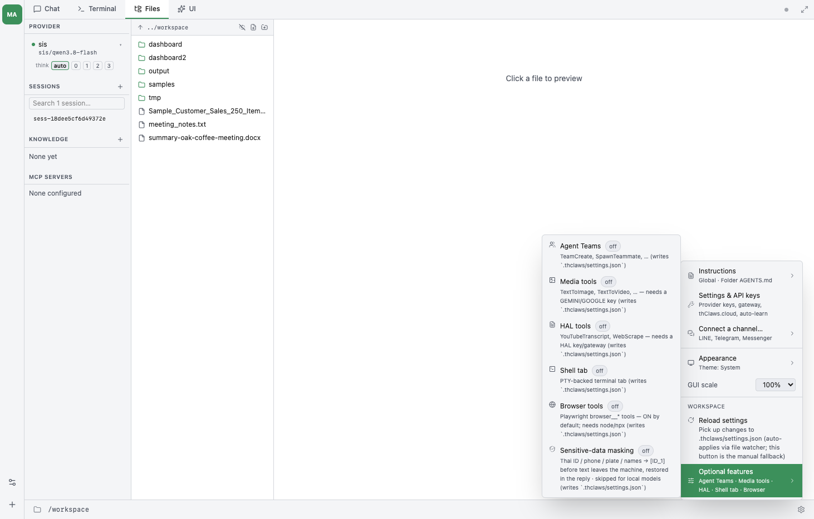
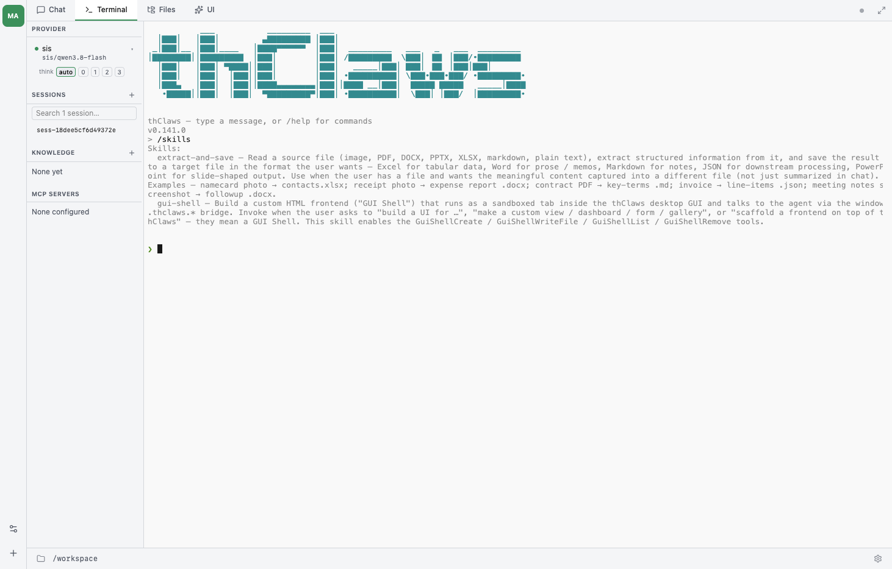
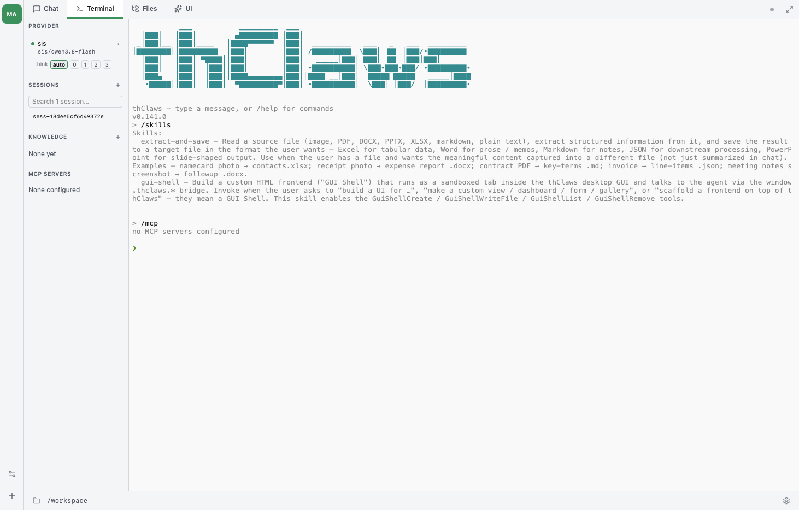

ใช้งาน Workspace ทั้งหมด
วันที่ 2 · 21 ต.ค. 2026 · ~142 นาที
thClaws · hosted workspace · การตั้งค่า · Skills · MCP · Multi-agent
1 / 79ทบทวนวัน 1 — จุดเขียวของคุณยังอยู่ไหม
- เปิด workspace แล้วดูแถบซ้ายหัวข้อ PROVIDER
- แถว
sisมีจุดสีเขียว ไหม? - จุดแดง = provider ยังไม่พร้อม ⇒ ยังเริ่มช่วงถัดไปไม่ได้
บันทึก API key แล้วจุดจะเปลี่ยนเป็นเขียวภายใน ~1 วินาที

วันนี้เราจะไปไหน
- 3 จุดทดสอบ — คำสั่งแรก · อัปโหลดไฟล์ · แก้ไฟล์ในแท็บ Files
- ที่เหลือเป็น สาธิต — วันสุดท้าย (26 ต.ค.) เราลงมือเต็มรูปแบบ
- กติกาเดียวของวันนี้: กดทุกปุ่มที่ผู้สอนชี้
ไม่ต้องกลัวพัง — workspace เป็นของคุณคนเดียว ลบแล้วสร้างใหม่ได้
สร้าง workspace สำหรับเริ่มทำงาน
- กด
+ New workspace - กรอก Name — ชื่อที่คุณเข้าใจ (แก้ทีหลังได้)
- กรอก Slug — ตัวพิมพ์เล็ก
a–z0–9และ- - กดสร้าง แล้วรอสถานะเป็น READY
ที่อยู่ของ workspace จะเป็น
sis.thclaws.ai/u/<บัญชี>/<slug>/
ตั้งชื่อตามงานที่ทำจริง — วันนี้จะได้ใช้ต่อทั้งวัน

สถานะและปุ่มของ workspace
| สถานะ | หมายความว่า | ต้องทำอะไร |
|---|---|---|
| READY | พร้อมใช้ | กด Open ↗ เข้าไปได้เลย |
| PAUSED | พักไว้ (ประหยัดทรัพยากร) | กด Wake — ใช้เวลาประมาณ 10 วินาที |
| provisioning | กำลังตั้งเครื่องให้ | รอสักครู่ |
PAUSED ไม่ใช่ค้าง — ระบบพัก workspace ที่ไม่ได้ใช้ 30 นาทีเพื่อประหยัด
ลองเอง: สร้าง workspace ของคุณ
- กด
+ New workspace - ตั้งชื่อตามงานที่คุณทำจริง (เช่น
sales-report) - รอจนสถานะขึ้น READY
- ยังไม่ต้องกด
Open— รอผู้สอนพร้อมกัน
ไม่ผ่านข้อไหน ยกมือ — อย่าปล่อยผ่าน แล้วค่อยตามคนอื่น
เข้าไปข้างใน — เราเห็นอะไร
เมื่อกด Open ↗ เราจะเจอ workspace ของตัวเองที่รันอยู่บนคลาวด์
- แถบแท็บ ด้านบน —
Chat · Terminal · Files · UI - แถบ agent ซ้ายสุด — ตัวที่ทำงานอยู่ (
main) - แถบซ้าย — PROVIDER · SESSIONS · KNOWLEDGE · MCP SERVERS
- แถบสถานะ ล่างซ้าย = พาธ · ล่างขวา = ปุ่มเฟือง Setting และเวอร์ชัน
ทำงานบนเว็บ ไม่ต้องติดตั้งอะไรเลย — เปิดจากเบราว์เซอร์ได้ทุกเครื่อง

ทำงานที่เว็บ หรือที่แอปเดสก์ท็อป?
| Hosted workspace (เว็บ) | แอปเดสก์ท็อป | |
|---|---|---|
| ติดตั้ง | ไม่ต้อง — เปิดเบราว์เซอร์ | ต้องติดตั้ง (ทำแล้วในวัน 1) |
| ไฟล์ของคุณ | ต้องอัปโหลดเข้า workspace | agent อ่านไฟล์ในเครื่องได้ตรง ๆ |
| หน้าตา | แท็บ + แถบ agent + เมนู Setting ชุดเดียวกัน | ชุดเดียวกัน |
| เหมาะกับ | ทำงานได้ทุกที่ · แชร์ให้ทีมดู · เครื่องบริษัทที่ล็อก | งานที่ต้องแตะไฟล์จำนวนมากในเครื่อง |
วันนี้เราสอนบนเว็บเป็นหลัก — เพราะทุกอย่างที่ต้องใช้อยู่บนนั้นครบแล้ว
ที่ทำบนเว็บได้ เดสก์ท็อปก็ทำได้เหมือนกัน (กลับกันไม่จริง: เดสก์ท็อปอ่านไฟล์ในเครื่องได้ลึกกว่า)
แผนที่ workspace — 5 ส่วนที่ต้องรู้
main ตัวเดียว/workspace · ปุ่มเฟือง Setting · เวอร์ชัน engineแถบแท็บ — บ้าน 4 หลัง
/สลับแท็บได้ตลอด ไม่โหลดหน้าใหม่ และ ประวัติการคุยใช้ร่วมกัน ระหว่าง Chat กับ Terminal
Chat view — ที่ทำงานหลัก
- พิมพ์คำสั่งเป็นภาษาไทยธรรมดา แล้วกด Enter
- คำตอบค่อย ๆ พิมพ์ออกมา (streaming) — รอได้
- เห็นบล็อก
[tool: …]= agent กำลังลงมือทำ ไม่ใช่แค่ตอบ - ท้ายคำตอบมีบรรทัดสรุป token และค่าใช้จ่าย
ถ้าคำตอบไม่ตรงที่ต้องการ ไม่ต้องเริ่มใหม่ — บอกแก้เพิ่มในข้อความถัดไปได้เลย
[tool: Read: meeting_notes.txt]
[tool: Write: work-summary.md]
[tokens: 937in/464out · cache: 22528r
· 8s · $0.0221 session]Terminal view — เมื่ออยากพิมพ์เอง
หน้าตาเหมือน terminal ที่เราคุ้นเคย — รัน thClaws ตัวเดียวกับ CLI
- ประวัติใช้ร่วมกับแท็บ Chat — งานเดียวกัน ไม่แยกกัน
- พิมพ์
/แล้วรายการคำสั่งทั้งหมดจะขึ้น จัดเป็นหมวด - ใช้เมื่ออยากดูคำสั่งที่แท็บ Chat ไม่โชว์
ผู้เริ่มใช้ไม่จำเป็นต้องเปิดแท็บนี้ — แต่รู้ไว้จะช่วยได้มากในหัวข้อ Setting / Skills / MCP

Files view — ดูและแก้ไฟล์ใน workspace
สิ่งที่ทำได้ในแท็บนี้
- คลิกไฟล์เพื่อ ดูตัวอย่าง (markdown · HTML · โค้ด · รูป · PDF)
- สลับเป็นโหมด แก้ไข แล้วพิมพ์แก้ได้
- จุด ● = ยังไม่บันทึก ·
Cmd/Ctrl + S= บันทึก - สร้าง ไฟล์ใหม่ และ โฟลเดอร์ใหม่ ที่ราก workspace
ไฟล์ที่ agent สร้างจะโผล่ที่นี่ให้ตรวจได้ทันที — นี่คือที่ตรวจงาน

UI view — เลือกหน้าบ้านของ workspace
ในแท็บนี้เลือกได้ว่าจะให้ workspace หน้าตาเป็นแบบไหน

กด
Set as defaultเพื่อให้เปิดมาเจอแบบที่เลือก
แถบ agent — หลายตัวในบ้านเดียว
แถบซ้ายสุดบอกว่า ใครกำลังทำงาน
- ช่องแรกคือ agent ตัวที่ใช้อยู่ — ชื่อย่อและสถานะ (เช่น
main — ready) - ท้ายแถบมี 2 ปุ่ม: ตั้งค่า workspace และเพิ่ม agent
- หนึ่ง workspace รับ agent ได้สูงสุด 8 ตัว
วันนี้เรามี
mainตัวเดียว — เดี๋ยวช่วงบ่ายเราจะเพิ่มตัวที่สอง (module Multi-agent)
PROVIDER — เลือกมันสมอง
แถวบนสุดของแถบซ้ายบอกว่ากำลังใช้ผู้ให้บริการและโมเดลอะไร
- คลิกที่แถว แล้วกด
▾เพื่อเปิด รายการโมเดล (พิมพ์ค้นหาได้) - จุดเขียว = พร้อมใช้ · จุดแดง = ยังไม่มี credential
- แถว
think= ระดับความลึกในการคิด
ในระบบ SiS ผู้ใช้ทั่วไปมักไม่ต้องใส่ key เอง — องค์กรผูกช่องทางให้แล้ว
SESSIONS · KNOWLEDGE · MCP SERVERS
/mcpสถานะของ workspace ที่เพิ่งสร้าง: KNOWLEDGE ขึ้น
None yet· MCP SERVERS ขึ้นNone configured— เป็นเรื่องปกติ ยังไม่มีใครใส่ของ
ปุ่ม Setting — อยู่มุมขวาล่าง
มองหาปุ่ม เฟือง ที่มุมขวาล่าง (ข้างพาธ /workspace)
กดแล้วได้เมนู 7 รายการ
- Instructions
- Settings & API keys
- Connect a channel…
- Appearance
- GUI scale
- Reload settings · Optional features
รายการที่มีเครื่องหมาย
›จะกางเมนูย่อย เมื่อเอาเมาส์ชี้ค้าง — ถ้าคลิก เมนูจะปิดแทน

ทัวร์จบ — ลองเอง 1 นาที
- สลับแท็บให้ครบทั้ง 4: Chat → Terminal → Files → UI แล้วกลับมา Chat
- คลิกแถว PROVIDER แล้วกด
▾ดูรายการโมเดล (แล้วปิด) - กดปุ่มเฟือง Setting เปิดค้างไว้ แล้วเอาเมาส์ชี้ที่แถว Instructions
- ปิดเมนู แล้วกลับมาแท็บ Chat
ยังไม่เห็นปุ่มไหน? เทียบกับภาพสไลด์ก่อนหน้า แล้วยกมือถาม
ทดสอบคำสั่งแรก
พิมพืในแท็บ Chat ว่า
อ่าน meeting_notes.txt แล้วสรุปเป็น bullet 3 ข้อ ลงไฟล์ work-summary.mdmeeting_notes.txt อ่าน แล้วเขียนผลลัพธ์ลง work-summary.mdFilesคำสั่งดี = บอก อ่านอะไร + ให้ทำอะไร + ได้ผลเป็นไฟล์อะไร
อ่านผลลัพธ์ให้เป็น
[tool: Read: meeting_notes.txt] ← อ่านไฟล์
[tool: Write: work-summary.md] ← เขียนผลลัพธ์[tokens: 937in/464out · cache: 22528r · 8s · $0.0221 session][tool: …]= agent กำลังลงมือ ไม่ใช่แค่ตอบ- บรรทัดท้าย = สรุปการใช้งาน: ป้อนเข้า/ส่งออก · แคช · เวลา · ค่าใช้จ่ายสะสมของ session
ตัวเลขนี้ไว้ดูว่า งานแบบไหนกินงบ — ไม่ใช่คะแนนความฉลาดของ agent
ทดสอบ 1 — คำสั่งแรกของฉัน
- ส่งคำสั่งแรกในแท็บ Chat
- รอจนจบ — เห็น
[tool: …]อย่างน้อย 2 บล็อก - สลับไปแท็บ Files เปิดดูไฟล์ผลลัพธ์ — อ่านออกไหม
ยังไม่ออก? ระบุชื่อไฟล์ปลายทางให้ชัด ในคำสั่ง แล้วลองอีกครั้ง
ตัวอย่าง: "…ลงไฟล์work-summary.mdที่ราก workspace"
ส่งไฟล์ขึ้น workspace
เพดานที่ต้องจำ — ปุ่ม Upload files รับสูงสุด
ไฟล์ที่อัปโหลดจะไปอยู่ที่โฟลเดอร์ _uploads/
ทำงานบนเว็บ ไฟล์ในเครื่องเราจะไม่ถูกมองเห็น จนกว่าจะอัปโหลด

ทดสอบ 2 — อัปโหลด 1 ไฟล์
- เตรียมไฟล์งานจริงของตัวเองมา 1 ไฟล์ (Word / Excel / PDF)
- กดปุ่มอัปโหลดในแท็บ Chat แล้วเลือกไฟล์
- สลับไปแท็บ Files — เห็นไฟล์อยู่ใน
_uploads/ไหม
ไฟล์ใหญ่เกิน 25 MB? ย่อขนาดก่อน แล้วบอกผู้สอนจะได้ช่วยดู
3 วิธีพาไฟล์เข้าบทสนทนา
_uploads/ แล้วเรียกชื่อไฟล์ในคำสั่งoutput/report.xlsxบนเว็บ ไฟล์ต้องอยู่ใน workspace ก่อน (วิธีที่ 1 หรือ 2) — ส่วนแอปเดสก์ท็อปวางพาธไฟล์ในเครื่องได้ตรง ๆ
Built-in tools ~30 ตัว แบ่ง 4 กลุ่ม
Ls · Read · Glob · Grep · Write · EditBashWebFetch · WebSearchPdfCreate · DocxCreate · XlsxCreate · PptxCreate (และตัวอ่านคู่กัน)จำ 4 กลุ่ม พอ — กลุ่ม "เอกสาร" คือของใหม่ที่ทำให้ agent ทำงานออฟฟิศได้จริง
tool ทำงานกับไฟล์อย่างไร
ตามรอยของ 1 คำสั่ง
Read— อ่านไฟล์ต้นทาง- คิด — เลือกข้อมูลที่จะใช้
Write— เขียนไฟล์ปลายทาง- เราเปิดดูในแท็บ
Files
ขีดจำกัดที่ควรรู้
[tool: Read: meeting_notes.txt]
[tool: Write: work-summary.md]ภาษาไทยไม่เพี้ยน
DocxCreate / PptxCreatePdfCreateThai-first ฝังมาในตัว — ไม่ต้องติดตั้งฟอนต์เพิ่ม
ตัวอย่างข้อความที่ต้องอ่านออกครบทุกตัว — เครื่องมือ ฝ่าย เป็น ทำงาน กำลัง น้ำ
เปิดไฟล์ตรวจทุกครั้งก่อนส่งต่อให้คนอื่น
เดโม: PDF ไทย → Word
อ่าน company-policy.pdf สรุป 5 หัวข้อ แล้วสร้างเป็นไฟล์ Word policy-summary.docx[tool: PdfRead: …] → [tool: DocxCreate: …]policy-summary.docx แสดงสดจากหน้าจอผู้สอนเอกสารมี 14 หมวด — การเลือก 5 หัวข้อเองคือทักษะการจัดลำดับความสำคัญ
จัดการไฟล์ใน Files view
Cmd/Ctrl + S = บันทึกไฟล์ที่แก้ในนี้คือไฟล์จริงที่ agent อ่าน — แก้วันนี้ ใช้ได้เทิร์นถัดไป
ทดสอบ 3 — แก้ไฟล์ใน Files
- สลับไปแท็บ Files เปิดไฟล์ผลลัพธ์จากทดสอบ 1
- สลับเป็นโหมด Edit แก้ข้อความ 1 จุด แล้วกด
Cmd/Ctrl + S - กลับไปแท็บ Chat ถามว่า "สรุปในไฟล์ตอนนี้มีกี่ข้อ"
ข้อนี้พิสูจน์ว่า ไฟล์บนจอคือไฟล์เดียวกันกับที่ agent เห็น
agent หลายตัวใน workspace เดียว
หนึ่งโปรเจกต์ · หลายตัวตน · ไฟล์ชุดเดียวกัน
เนื้อหายกจากชุดวิดีโอ ch35 · ปรับภาพเป็นระบบ SiS v0.141.0
32 / 79หลาย agent หนึ่ง workspace
workspace หนึ่งอันเก็บ agent ได้หลายตัว
แต่ละตัวมี บทสนทนา ความจำ และการตั้งค่าของตัวเอง — แต่ทำงานบน ไฟล์โปรเจกต์ชุดเดียวกัน
ch35 ไม่ใช่ ch17
สองบทนี้พูดถึง "agent หลายตัว" เหมือนกัน แต่คนละเรื่องกัน
บทที่ 35 — agent ใน workspace
- agent ที่ คุณ เอาเข้ามาไว้ใน workspace
- คุณ เป็นคนสลับใช้เอง
- แต่ละตัวมีตัวตนถาวร อยู่ข้ามเซสชัน
- เป้าหมาย: แยกงานเป็นบทบาท
บทที่ 17 — Agent Teams
- เพื่อนร่วมทีมที่ agent เรียกขึ้นมาเอง ผ่าน
TeamCreate - ประสานงานกันผ่านกล่องจดหมาย
- มีอายุแค่ช่วงที่ทำงานนั้น
- เป้าหมาย: กระจายงานชิ้นเดียว
ใช้พร้อมกันได้ — agent ตัวหนึ่งของคุณ จะไปตั้งทีมของมันเองก็ได้
ทุก agent เห็นไฟล์ชุดเดียวกัน
เปิดโฟลเดอร์โปรเจกต์ของคุณขึ้นมา — นั่นคือไฟล์ที่ทุก agent ใช้ร่วมกัน
ไฟล์ของคุณไม่ถูกย้ายไปไหน — อยู่ในโฟลเดอร์โปรเจกต์เหมือนเดิม หาเจอด้วย Finder ตามปกติ
อะไรใช้ด้วยกัน อะไรแยกกัน
ใช้ด้วยกันทั้ง workspace
- ไฟล์งานทั้งหมด ในโฟลเดอร์โปรเจกต์
- knowledge base ของโปรเจกต์
- memory ของโปรเจกต์
- ประวัติ git (ถ้ามี)
⇒ agent ทุกตัวเห็นสิ่งเดียวกัน
แยกเป็นของ agent แต่ละตัว
- คำสั่งประจำตัว ของ agent
- การตั้งค่า — โมเดล โหมดสิทธิ์ ฟีเจอร์ที่เปิด
- บทสนทนาย้อนหลัง
- skill ที่ติดตั้งไว้
- การล็อกอินเว็บที่ค้างไว้
⇒ แต่ละตัวจำของตัวเอง ไม่ปนกัน
เปลี่ยน agent แล้ว ไม่ต้องเริ่มบทสนทนาใหม่ทั้งโปรเจกต์ — แต่ประวัติแชทของ agent ตัวก่อนจะไม่ตามมา
เพิ่ม agent แล้วไฟล์ฉันจะย้ายไหม
ไม่ย้าย — ไฟล์โปรเจกต์อยู่ที่เดิมเสมอ
แถบ agent
สลับ agent แล้วอะไรตามไป
ใช้ได้ทั้งในแอปเดสก์ท็อปและใน --serve
- หนึ่งช่องต่อหนึ่ง agent — มี อักษรย่อ กำกับ
- ตัวที่ใช้อยู่จะถูก ไฮไลต์
- เอาเมาส์ชี้ค้างไว้ จะเห็นชื่อกับสถานะ เช่น
main — ready - คลิกเพื่อสลับ แล้วแถบแท็บ แถบข้าง และบทสนทนา จะตามไปทั้งหมด
แถบนี้คือทางเดียวที่คุณเห็นว่า "ตอนนี้กำลังคุยกับ agent ตัวไหน" — ถ้าผลลัพธ์ดูไม่ตรงกับที่ตั้งค่าไว้ ให้ดูแถบนี้ก่อน
ปุ่มสองปุ่มในแถบ
| ปุ่ม | ทำอะไร |
|---|---|
| Workspace settings | เพิ่ม ลบ หรือรีสตาร์ท agent |
| Add an agent | ดึงจาก Agent Template หรือเริ่มตัวเปล่า ๆ |
agent มาจากไหน
agent มาจาก Agent Templates — catalog ที่ thclaws.cloud (บทที่ 27)
/cloud listเพิ่ม agent จาก GUI — สองทาง
กด + ที่ท้ายแถบ agent แล้วเลือกว่าจะ เริ่มตัวเปล่า หรือ ดึงจากเทมเพลต
agent ใหม่จะขึ้นเป็นช่องใหม่ในแถบ หลัง host เริ่มรอบถัดไป
dialog — Add a blank agent

dialog — Add from Agent Template
เพิ่ม agent จากเทอร์มินัล · ผู้ใช้ขั้นสูง
ถ้าถนัดเทอร์มินัล ทำได้เหมือนกัน — ผลลัพธ์เหมือนกดจากแอปทุกอย่าง
thclaws bots add <template> # เวอร์ชันล่าสุด
thclaws bots add <template> --version 3 # ปักหมุดเวอร์ชันไม่ต้องใช้ก็ได้ — ถ้าถนัดใช้ปุ่มในแอป ใช้ทางนั้นได้เลย
ทางนี้เหมาะเมื่อต้องเพิ่มหลายตัวพร้อมกัน หรือทำเป็นสคริปต์ติดตั้งให้ทีม
เพิ่ม agent แล้วไม่เห็นขึ้นในแถบ?
เป็นเรื่องปกติ — agent ใหม่จะขึ้นในแถบ ไม่ทันที แต่หลังระบบเริ่มรอบถัดไป
อยากลบ agent ออก
thclaws bots remove <slug>ไม่ต้องกลัวว่าจะเสียของ — การลบแบบปกติไม่ลบข้อมูล agent
ประวัติบทสนทนาและการล็อกอินเว็บที่ค้างไว้ยังอยู่ครบ ถ้าเพิ่มตัวเดิมกลับมา จะได้ของเดิมคืน
⚠ workspace ต้องมี agent อย่างน้อย 1 ตัว — ปุ่มลบของตัวสุดท้ายจะถูกล็อกไว้
ดูว่าโปรเจกต์นี้มี agent อะไรบ้าง · ผู้ใช้ขั้นสูง
ถ้าอยากรู้ว่าตอนนี้มี agent กี่ตัว ชื่ออะไร และโปรเจกต์อยู่รูปแบบไหน
thclaws bots statusworkspace /Volumes/Data01/projects/my-project
layout multiple agents (v3 or later)
agent main (Main)ปกติไม่ต้องใช้ — ดูรายการ agent ได้จากแถบ agent ในแอปอยู่แล้ว
ทางนี้มีประโยชน์เมื่อทำงานหลายโปรเจกต์ แล้วอยากเช็กให้แน่ใจว่ากำลังอยู่โฟลเดอร์ไหน
โปรเจกต์เก่าใช้ agent หลายตัวได้ไหม
ได้ — โปรเจกต์ที่สร้างไว้ก่อนมีระบบหลาย agent จะมี agent ตัวเดียว
thclaws bots migrate --dry-run ดูก่อนว่าจะย้ายอะไร → thclaws bots migrate ลงมือไม่ต้องกังวลเรื่องข้อมูล — ถ้าถูกขัดจังหวะกลางทาง สั่งใหม่ได้เลย
และ ไฟล์งานของคุณไม่ถูกแก้ — มีแต่โครงสร้างภายในที่จัดใหม่
สอง agent แก้ไฟล์เดียวกัน — ระวังอะไร
agent ทุกตัวเห็นไฟล์ชุดเดียวกัน จึงแก้ทับกันได้
ถ้าสั่ง agent สองตัวแก้ ไฟล์เดียวกัน พร้อมกัน ผลที่ได้จะเหมือนให้ คนสองคน เขียนไฟล์เดียวกัน — ขึ้นกับว่าใครเซฟทีหลัง
เปิดฟีเจอร์ไม่ติดกับ agent ตัวเดียว
อาการ: ฟีเจอร์หนึ่งใช้ได้กับ agent ตัวอื่น แต่กับ agent ตัวนี้เปิดไม่ติด
สาเหตุที่พบบ่อย: ไฟล์ตั้งค่าของ agent ตัวนั้นเสียรูปแบบ — ระบบจะ ปิดทุกอย่างให้เองโดยไม่แจ้งเตือน
ให้ agent แตะไฟล์ของคุณ — พูดพาธยังไง
พูดพาธจากโฟลเดอร์โปรเจกต์เสมอ — agent ทุกตัวเข้าใจพาธแบบนี้เหมือนกัน
ถ้าสงสัยว่าตอนนี้ agent กำลังทำงานจากโฟลเดอร์ไหน ถามตรง ๆ ในแชทได้
— ง่ายและชัวร์กว่าการเดาพาธเอง
สรุป
- หนึ่งโปรเจกต์ หลาย agent — ไฟล์งานใช้ร่วมกัน แต่ละตัวจำบทสนทนาของตัวเอง
- เพิ่ม agent ได้จากปุ่ม
+ท้ายแถบ — เริ่มเปล่า หรือเลือกจากเทมเพลต - สลับ agent ที่แถบซ้ายสุด แล้วแถบข้างและบทสนทนาเปลี่ยนตาม
- ลบ agent แล้วของไม่หาย — ประวัติและการล็อกอินยังอยู่ เพิ่มกลับมาได้ของเดิม
- โปรเจกต์เก่าใช้ได้เลย — เปิดขึ้นมาแล้วระบบจัดให้เอง
- ระวังตอนสั่งงาน — สอง agent แก้ไฟล์เดียวกันพร้อมกัน จะทับกัน ให้แบ่งงานตามไฟล์
- เปิดฟีเจอร์ไม่ติดกับตัวเดียว — มักเป็นไฟล์ตั้งค่าของตัวนั้นเสีย ไม่ใช่ทั้งระบบ
Session คืออะไร ผูกกับอะไร
ทุกบทสนทนาถูกบันทึกเป็น session เก็บไว้ที่
./.thclaws/state/sessions/<id>.jsonlsession ผูกกับ workspace หรือโฟลเดอร์ ที่เปิดอยู่
- สลับ session → ประวัติที่เห็นเปลี่ยนตาม
- เปลี่ยนโฟลเดอร์ → เห็นคนละชุด session
"session เก่าหาย" เกือบทุกครั้งคือ เปิดผิดโฟลเดอร์
จัดการ session ในแถบ SESSIONS
สรุปประชุม-ต.ค.ตั้งชื่อ session ทุกครั้งที่ทำงานสำคัญ — กลับมาหาง่ายกว่าที่คิด
เลือกโมเดล — PROVIDER
- คลิกที่แถว PROVIDER ในแถบซ้าย
- กด
▾เพื่อเปิดรายการโมเดล - พิมพ์ค้นหา แล้วเลือก
ในระบบ SiS มีอย่างน้อย sis/qwen3.8-flash
⚠ สลับข้ามค่ายผู้ให้บริการ = ต้องเริ่ม session ใหม่ ถ้าโมเดลที่โฟลเดอร์กำหนดไม่ตรงเดิม
ระดับการคิด (think)
ลองเทียบด้วยตาตัวเอง — ส่งคำถามเดียวกันที่ 0 แล้วที่ 3 ดูความต่างของความเร็วและความลึก
ค่านี้บันทึกไว้กับ workspace ไม่ใช่ราย session — เปลี่ยนแล้วใช้ต่อทุกบทสนทนา
จุดแดง–จุดเขียว บอกอะไร
บน workspace เว็บของ SiS ผู้ใช้ทั่วไป มักไม่ต้องใส่ key เอง เพราะองค์กรผูกช่องทางให้แล้ว
ในแบบฝึกของเรา ถ้าจุดไม่เขียว ให้แจ้งผู้สอน — ไม่ต้องพยายามใส่ key เอง
เมนู Setting — แผนที่ 7 รายการ
| รายการ | ใช้ทำอะไร |
|---|---|
| Instructions | แก้คำสั่งประจำตัวของ agent (Global / Folder) |
| Settings & API keys | กุญแจผู้ให้บริการ · gateway · บัญชี cloud |
| Connect a channel… | ต่อ LINE / Telegram / Messenger |
| Appearance | ธีมสว่าง–มืด–ตามระบบ |
| GUI scale | ย่อ/ขยายหน้าจอ 75–200% |
| Reload settings | อ่านไฟล์ตั้งค่าใหม่ด้วยมือ |
| Optional features | เปิด/ปิดความสามารถเสริม 6 ตัว |
รายการที่มี
›— เอาเมาส์ชี้ค้าง เพื่อกางเมนูย่อย (คลิกจะปิดเมนูแทน)
Instructions = ไฟล์ AGENTS.md
คำสั่งประจำตัว agent เก็บในไฟล์ AGENTS.md แก้ได้ 2 ที่
~/.config/thclaws/AGENTS.md/workspace/AGENTS.mdเปิดจาก Settings → Instructions → เลือก Global หรือ Folder
เขียนแล้วกด
Save— agent เห็นทันทีในข้อความถัดไป

ลองเอง 30 วินาที — instruction ข้อแรก
- เปิด Settings → Instructions → Folder
- เขียน 1 ข้อที่อยากให้ agent จำไว้ เช่น "ตอบสั้น กระชับ ภาษาไทย"
- กด
Saveแล้วปิดหน้าต่าง
ต่อจากนี้ agent จะทำตามข้อนั้น ทุกครั้งจนกว่าเราจะแก้หรือลบ
คิดไม่ออก? ลอง: "ทุกครั้งที่สร้างไฟล์ ให้สรุป 3 บรรทัดท้ายคำตอบเสมอ"
Optional features — สวิตช์ 6 ตัว
เปิด/ปิดความสามารถเสริม — ค่าถูกบันทึกลง .thclaws/settings.json ทันที
- Agent Teams — ทำงานเป็นทีม
- Media tools — สร้างภาพ วิดีโอ เสียง
- HAL tools — ดึงวิดีโอ YouTube / อ่านหน้าเว็บ
- Shell tab — แท็บเทอร์มินัลเต็มรูปแบบ
- Browser tools — ให้ agent เปิดเบราว์เซอร์
- Sensitive-data masking — ปิดข้อมูลอ่อนไหวก่อนส่งออก
⚠ ถ้าไฟล์
settings.jsonผิดรูป ทุกสวิตช์จะอ่านเป็น "ปิด" แบบเงียบ ๆ ไม่มีคำเตือน

API key เก็บที่ไหน — และอะไรที่ห้ามทำ
ระบบค้นหากุญแจตามลำดับ (บนสุดชนะ)
- ตัวแปรสภาพแวดล้อมของ shell
- OS keychain ← วิธีที่แนะนำ
~/.config/thclaws/.env./.env
กุญแจไม่ถูกเก็บใน settings.json เด็ดขาด · บนเว็บดู/ตั้งที่ Settings → Settings & API keys
- ถ้าใช้
.envให้ใส่.envใน.gitignoreทันที - ถ้าเผลอ commit แล้ว — เปลี่ยนกุญแจใบนั้นทันที
Skill — ความเชี่ยวชาญที่โหลดได้
Skill = เวิร์กโฟลว์ที่นำกลับมาใช้ใหม่ได้ บรรจุเป็นโฟลเดอร์
ในระบบ SiS มี skill ติดตั้งไว้ 2 ตัว: extract-and-save · gui-shell

ข้างใน skill มีอะไร
skill ที่ดี = บอกชัดว่าเมื่อไหร่ควรใช้ ไม่ใช่แค่บอกว่ามันทำอะไร
name: extract-and-save
description: อ่านไฟล์ต้นทาง …
whenToUse: เมื่อต้องการสกัดข้อมูล…
model: …ดูว่ามี skill อะไรติดตั้งแล้ว
พิมพ์ในแท็บ Terminal ได้เลย — คำสั่งนี้ไม่กินโควตาโมเดล
หา skill ใหม่จาก marketplace
marketplace = แคตตาล็อก skill ที่คัดสรรและตรวจสัญญาอนุญาตแล้ว
อ่านป้ายก่อนติดตั้งเสมอ:
open= ใช้ได้ ·linked-only= ดูได้แต่ติดตั้งไม่ได้ ·[blocked by policy]= องค์กรปิดกั้น
ติดตั้ง skill เพิ่ม
/skill installใส่
--userเพื่อติดตั้งให้ใช้ได้ทุกโปรเจกต์ (ไม่ใส่ = เฉพาะโปรเจกต์นี้)
สาธิต: ดูรายการ + ติดตั้ง 1 ตัว
- ผู้สอนเปิด
/marketplaceให้ดูบนจอ - เลือก 1 ตัว → กด Install
- กลับไป
/skills— ตัวใหม่โผล่ในรายการ
จำหลักเดียว: ติดตั้งเฉพาะของที่ตรวจสอบที่มาได้ อย่าโหลดจากลิงก์ที่ไม่มีใครรู้จัก
MCP คืออะไร
- tool ที่ได้มาจะถูกตั้งชื่อแบบ
<ชื่อ server> <ชื่อ tool> - จากมุมของ agent มันแยกไม่ออกจาก tool ที่มีมาให้อยู่แล้ว
พูดง่าย ๆ: MCP = ช่องเสียบ สำหรับต่อความสามารถจากข้างนอกเข้ามา
Built-in tool กับ MCP ต่างกันตรงไหน
| Built-in tool | MCP | |
|---|---|---|
| ใครให้มา | มากับ thClaws | เสียบ tool ภายนอกเพิ่ม |
| ต้องตั้งค่าไหม | ไม่ต้อง | ต้องเพิ่ม server |
| ตัวอย่าง | Read · Bash · DocxCreate | GitHub · ฐานข้อมูล · Slack |
| ใครดูแล | ผู้พัฒนา thClaws | ทีมที่ทำ server นั้น |
งานทั่วไปบนเว็บสำเร็จด้วย built-in tool ได้เกือบทั้งหมด — MCP ไว้ต่อ ระบบของบริษัท
ของจริงในระบบ SiS — ยังไม่มีใครตั้ง
เปิดแถบซ้ายหัวข้อ MCP SERVERS จะเห็น
None configuredและถ้าพิมพ์ /mcp ในแท็บ Terminal จะได้
no MCP servers configuredนี่เป็นเรื่องปกติ — workspace ที่เพิ่งสร้างยังไม่มี server

สาธิตสด: เปิดแถบซ้าย
MCP SERVERSเทียบกับผลของ/mcpแล้วให้ผู้สอนเพิ่ม server 1 ตัว
— สังเกตว่ามันโผล่ในแถบซ้ายทันที และมีคำถามขออนุมัติเมื่อถูกเรียกครั้งแรก
ติดตั้งด้วยคำสั่งเดียว
/mcp add gh-mcp npx -y @modelcontextprotocol/server-githubผลลัพธ์ที่ได้
mcp 'gh-mcp' added (project, stdio, 20 tool(s))
→ .thclaws/mcp.jsonใช้ได้ทันที ไม่ต้องรีสตาร์ท — แต่แบบที่ติดตั้งผ่าน marketplace ต้องรีสตาร์ท
ค่าตั้งอยู่ที่ไหน · ดู · ลบ · ต่อใหม่
ไฟล์ตั้งค่า
- ไม่ระบุอะไร → project:
.thclaws/mcp.json - ใส่
--user→~/.config/thclaws/mcp.json
คำสั่งที่ใช้บ่อย
/mcpดู server และจำนวน tool/mcp infoรายละเอียด/mcp removeเอาออก/mcp reauthต่อสิทธิ์ใหม่เมื่อเจอ error 401
ถ้า server มีอยู่ในไฟล์หลายที่ ให้แก้ที่ระดับโปรเจกต์ก่อน
⚠ ข้อควรรู้ 1 — ทุก tool ขออนุมัติเสมอ
- tool ที่มาจาก MCP ถามอนุมัติทุกครั้ง ไม่มีข้อยกเว้น
- ไม่มีโหมด "อนุมัติอัตโนมัติ" ยกเว้นสั่งเปิดทั้งระบบ หรือทำ allowlist รายคำสั่ง
- allowlist เก็บที่
~/.config/thclaws/mcp_allowlist.json - การอนุมัติเทียบแบบ ตรงตัวอักษร — เปลี่ยนพาธไฟล์โปรแกรม = ถามใหม่
ถ้าเจอคำถามอนุมัติที่เราไม่ได้เป็นคนสั่ง — อ่านให้จบก่อนกด
⚠ ข้อควรรู้ 2 — กับดักที่ต้องรู้ก่อนใช้
สรุปสั้น: ติดตั้งง่าย แต่ต้องรู้ว่ากำลังให้สิทธิ์อะไรกับใคร
ทบทวนความปลอดภัย — 6 ข้อที่ต้องจำ
สรุปวันที่ 2
- workspace บนเว็บ มีครบทุกอย่าง: แท็บ · แถบ agent · แถบซ้าย · เมนู Setting
- Chat + Files คือที่ทำงานหลัก — สั่งงานและตรวจผลได้ในจอเดียว
- AGENTS.md คือที่เขียนคำสั่งประจำตัว — แก้ได้ทั้ง Global และเฉพาะโปรเจกต์
- Skill ให้ความเชี่ยวชาญ · MCP ต่อเครื่องมือภายนอก · หลาย agent แบ่งงานกันได้
- ทุกอย่างที่ให้สิทธิ์ ต้องรู้ว่ากำลังให้กับใคร
วันสุดท้าย 26 ต.ค. — ลงมือทำเองแบบไม่มีคนบอก
เอาไฟล์งานจริงของคุณมาด้วย
Quiz ท้ายวัน 14 ข้อ
- เก็บใบคำตอบให้ผู้สอน แล้วเฉลยทันที
- ข้อที่ไม่แน่ใจ = จุดที่ควรกลับไปอ่านใบผู้เรียน
handout/quiz-day2-student.* — แยกฉบับผู้เรียน/ผู้สอน